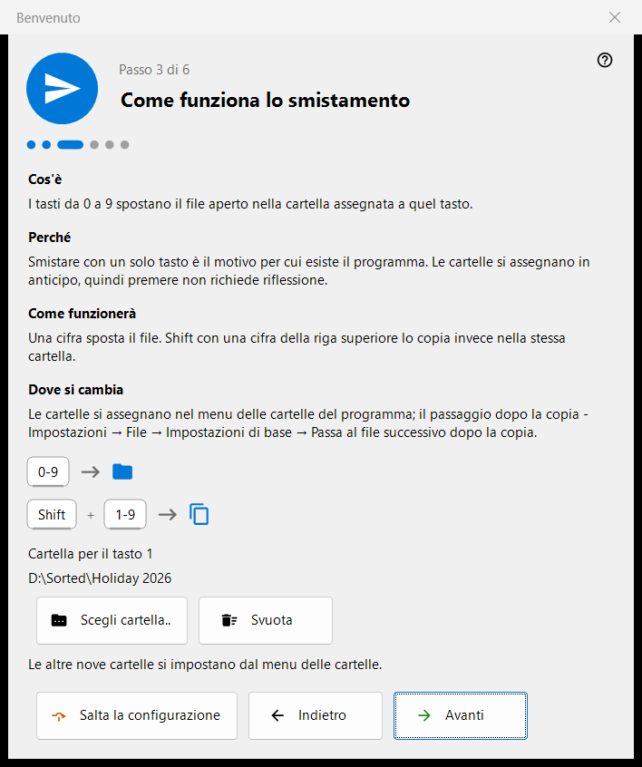
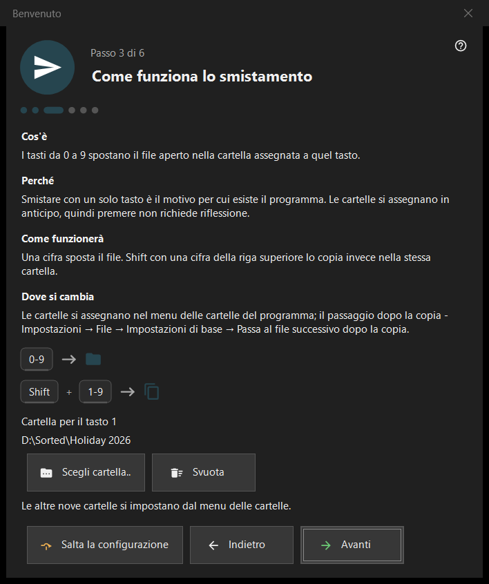

Benvenuto
Benvenuto
Scopo
I passaggi di benvenuto configurano l'essenziale in pochi minuti: lingua, aspetto, la cartella per il tasto 1, l'eliminazione e le associazioni dei file. Si aprono al primo avvio, dal pulsante «Configurazione iniziale» sulla schermata vuota del visualizzatore e da «Mostra di nuovo i passaggi di benvenuto» nella pagina «Generali» delle Impostazioni. Esistono solo nella versione a 64 bit.


In questo ordine
- Scegliere la lingua.
- Scegliere lo schema dello sfondo e l'azione della rotella.
- Scegliere la cartella per il tasto 1.
- Leggere come funziona l'eliminazione.
- Impostare le associazioni dei file.
- Controllare il riepilogo e premere «Fine». «Avanti» passa al passaggio successivo, «Indietro» torna al precedente, «Salta la configurazione» salta all'ultimo passaggio.
Gli elementi
Lingua dell'interfaccia
La finestra cambia lingua subito, come anteprima; il visualizzatore la adotta solo con «Avanti». Se si chiude la finestra senza averlo premuto, viene ripristinata la lingua del visualizzatore.
Aspetto
Scegliere lo schema dello sfondo dell'area dell'immagine (Per angolo, Nero, Bianco, Per lato, Dall'alto, Dal basso) e l'azione della rotella: o esegue lo zoom sul cursore e si scorre con le frecce, oppure scorre i file e lo zoom si fa con Ctrl+rotella. Entrambe le scelte si possono cambiare in seguito nella pagina «Immagini» delle Impostazioni.
Come funziona lo smistamento
Le cifre 0-9 spostano il file corrente in una cartella; Shift più una cifra della riga superiore lo copia. La cartella per il tasto 1 si sceglie con «Scegli cartella..»; le altre nove si impostano in seguito nella pagina «Destinazioni» delle Impostazioni. Se una cartella è scomparsa, viene segnalato: «La cartella non è più disponibile. Sceglierne un'altra.»
Eliminazione sicura
Mostra come funzionano Del (Cestino) e Shift+Del (definitiva). Le opzioni di eliminazione si trovano nella pagina «File» delle Impostazioni.
Aprire qui le immagini
Permette a questo programma di aprire immagini e video da Esplora risorse. Il passaggio compare solo quando il programma non è installato come pacchetto di Microsoft Store; vale per il proprio account utente e non richiede diritti di amministratore.
Tutto pronto
Il riepilogo elenca ogni impostazione, il suo valore e dove modificarla. Se su questo PC sono installati componenti server, il blocco «Server su questo PC» mostra ciascuno con il suo stato e il pulsante «Apri il gestore»; se non ne è installato nessuno, il blocco è nascosto.
Parti di un passaggio
Ogni passaggio ha quattro parti: «Cos'è», «Perché», «Come funzionerà» e «Dove si cambia».